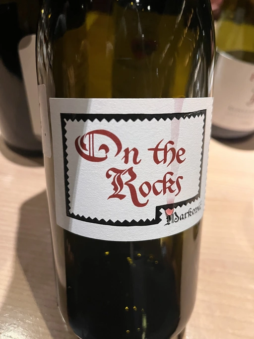

- Type
- Red Still, Dry
- Producer
- Tomislav Marković
- Vintage
- 2020
- Location
- Germany, Landwein Oberrhein
- Grapes
- Pinot Noir
- Alcohol
- 12.5
- Sugar
- 0.2
- Price
- 1590 UAH
- Cellar
- N/A
Producer
It is little known about Tomislav Marković, but his story seems to follow a familiar pattern. At some point, he decided to leave banking behind and switch to wine-making. A decision that came to life thanks to his occasional visits to his homeland Croatia. His uncle introduced Tomislav to the world of wine. And he became curious.
Yet before starting a winery, Tomislav wanted to get some knowledge and experience from other winemakers. In 2011, he left his banking job to study viticulture and oenology at Weincampus Neustadt. After some practice at Viera de Sousa in the Douro (Portugal) and Domaine de Montille in Volnay (Burgundy, France), he started to work as a consultant for organic viticulture and oenology.
In 2016, Tomislav became a négocian winemaker, a model he borrowed from Burgundy and Douro. It means that instead of farming vines, he was buying grapes from others to make his own wine. Risky and advantageous because it’s challenging to get access to suitable and high-quality vineyards for a newcomer. Yet, he found a total of 0.5ha in Rheinhessen.
Later on, in 2019, Tomislav finally planted his own 0.5ha vineyard in Baden with Sauvignon Blanc from the Loire. In 2021, he even planted Touriga Nacional vines, presumably planted for the first time in Germany.
Ratings
2022-12-13 - 8.25
I tasted it blindly and guessed the region. A classic, even austere yet charming bouquet of raspberries, peonies, raw meat (with iron!), and underbrush. Nothing extra, just delicious Pinot Noir. Medium-light body, elegant, juicy and sophisticated, a pleasure in the glass.
Wine #6 on the To Each Their Own Vol. 1. It took 4th place out of 7. And it was selected as the favourite wine of the evening (3 votes out of 7).
Related